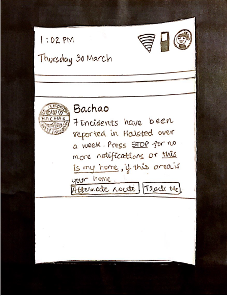

Formative Evaluation
Performed Cognitive Walkthrough via paper prototyping.
Task 1 - Low Level Emergency
Users have Bachao installed and are entering a danger zone. They receive a notification about recent incidents that have occurred in the area. They choose to be tracked.
Overall Findings - We had decided to make the “Track Me” and “Alternate Route” Buttons more prominent so that it immediately catches the user’s eye.
Task 2 - Low Level Emergency
Users have Bachao installed and are entering a danger zone. They receive a notification about recent incidents that have occurred in the area. They opt for an alternate (safer) route.
Overall Findings - We won’t be highlighting the existing route.
Task 3 - Medium Level Emergency
User feels unsafe. She is walking home after work at night. She feels that she is being followed.
Overall Findings - Messages based on particular emergency situations will be added. Add tutorial of app in Settings tab.
Task 4 - Medium Level Emergency
User feels unsafe while walking home after work at night. She sees a group of people following her and wants to alert 911.
Overall Findings - Reduce unnecessary options. Have more situation-specific message buttons.

Task 5 - High Level Emergency
User was walking home, when he is suddenly pulled into a moving van. User gets an opportunity to click on the widget button to call 911, while perpetrator is trying to silence the victim.
Task 5 was highly liked by our users.